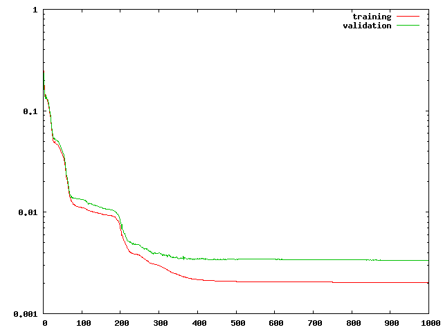
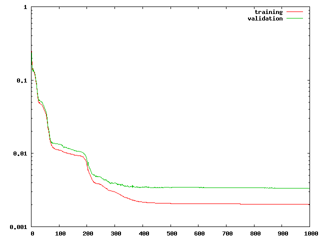

Now we add an error function, the mean-squared error, and an optimizer, the improved Rprop algorithm. Further, we write the error trajectories on training and validation data set to files.
#include <ReClaM/FFNet.h>#include <ReClaM/Rprop.h> #include <ReClaM/MeanSquaredError.h>#include <ReClaM/createConnectionMatrix.h> class MyNet : public FFNet { public: MyNet(unsigned i, unsigned o, const Array<int> c) : FFNet(i, o, c) {}; double g(double a) { return tanh(a); } double dg(double ga) { return 1 - ga * ga; } double gOutput(double a) { return a; }double dgOutput(double ga) { return 1.; } }; int main() { unsigned i, t; // just index variables double x, y; // construct sinc problem const unsigned numberTrainingPatterns = 50; Array<double> trainInput (numberTrainingPatterns, 1); Array<double> trainTarget(numberTrainingPatterns, 1); Array<double> valInput(numberValPatterns, 1); Array<double> valTarget(numberValPatterns, 1); for(i=0; i<numberTrainingPatterns; i++) { x = Rng::uni(-10., 10); y = sin(x)/x + Rng::gauss(0, 0.001); trainInput(i, 0) = x; trainTarget(i, 0) = y; x = Rng::uni(-10., 10); y = sin(x)/x; valInput(i, 0) = x; valTarget(i, 0) = y; } // define topology unsigned unsigned inputs = 1; unsigned firstHiddenLayer = 3; unsigned secondHiddenLayer = 2; unsigned outputs = 1; Array<int> con; createConnectionMatrix(con, inputs, firstHiddenLayer, secondHiddenLayer, outputs); // feed-forward neural network MyNet net(inputs, outputs, con);// error function MeanSquaredError error; // optimizer IRpropPlus optimizer; optimizer.init(net); // initialize the weights uniformly between -0.1 and 0.1 net.initWeights(-0.1, 0.1); std::ofstream trajectory("trajectory"); // training loop unsigned numberOfLearningCycles = 1000; for (t = 1; t <= numberOfLearningCycles; t++) { // train the network optimizer.optimize(net, error, trainInput, trainTarget); // write results trajectory << t << "\t" << error.error(net, trainInput, trainTarget) << "\t" << error.error(net, valInput, valTarget) << std::endl; } trajectory.close();return EXIT_SUCCESS; }
Further, we add the following lines to assess the performance of the model and to visualize the training data:
std::ofstream trainData ("trainingData"); for(i=0; i<numberTrainingPatterns; i++) trainData << trainInput(i, 0) << " " << trainTarget(i, 0) << std::endl; Array<double> in(1), out(1); std::ofstream model("model"); for(x=-10.; x<=10; x+=.5) { in(0) = x; net.model(in, out); model << x << " " << out(0) << std::endl; } model.close();
The program generates three data files, containing the evolution of the error on the two data sets, the training data, and the final model evaluated at equidistant test data points.
For example, if gnuplot is available for visualization, the lines
will produce plots like this:
 


Note that this tutorial does not teach the most difficult parts of neural network training, namely model selection and how to regularized the training process. However, it is straight-forward to modify the code above to do some kind of cross-validation (early-stopping).